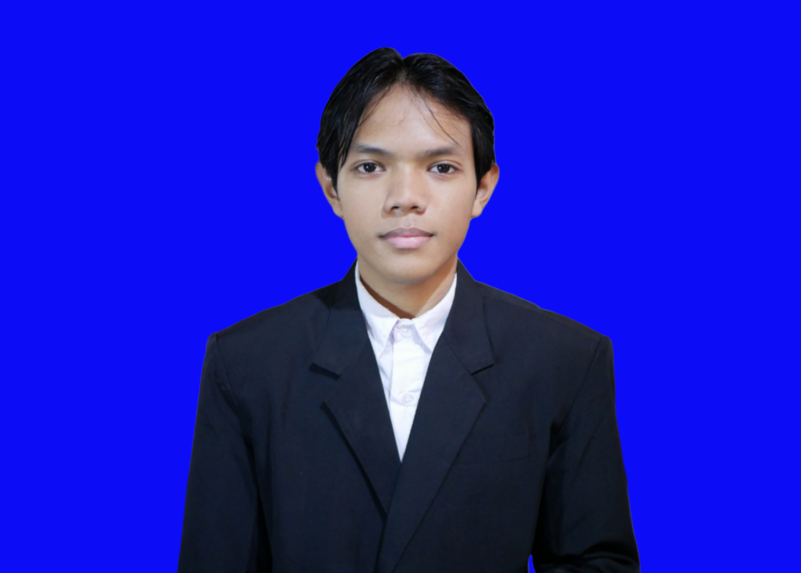

Saya adalah mahasiswa yang sedang memulai belajar hal-hal baru. Bercita-cita ingin seperti Pak Habibie, walau tekad dan keberanian masih 0, tapi saya yakin dengan berjalannya waktu nilai diri saya bisa bertambah.
Selain itu dalam hal teknologi saya ingin menjadi seorang penemu kecil-kecilan, setidaknya bisa memberikan sesuatu yang baru dalam hal teknologi.
| Kategori | Detail |
|---|---|
| Alamat | Jatiwarna, Pondok Melati, Bekasi |
| Telepon | +62 896 3737 4951 |
| Tingkat | Institusi | Tahun Masuk |
|---|---|---|
| Sarjana | Universitas Siber Asia | 2025 |
Saya suka menjelajah alam, seperti mendaki gunung, berkebun.
Saya juga suka membaca buku dan mendengarkan musik.